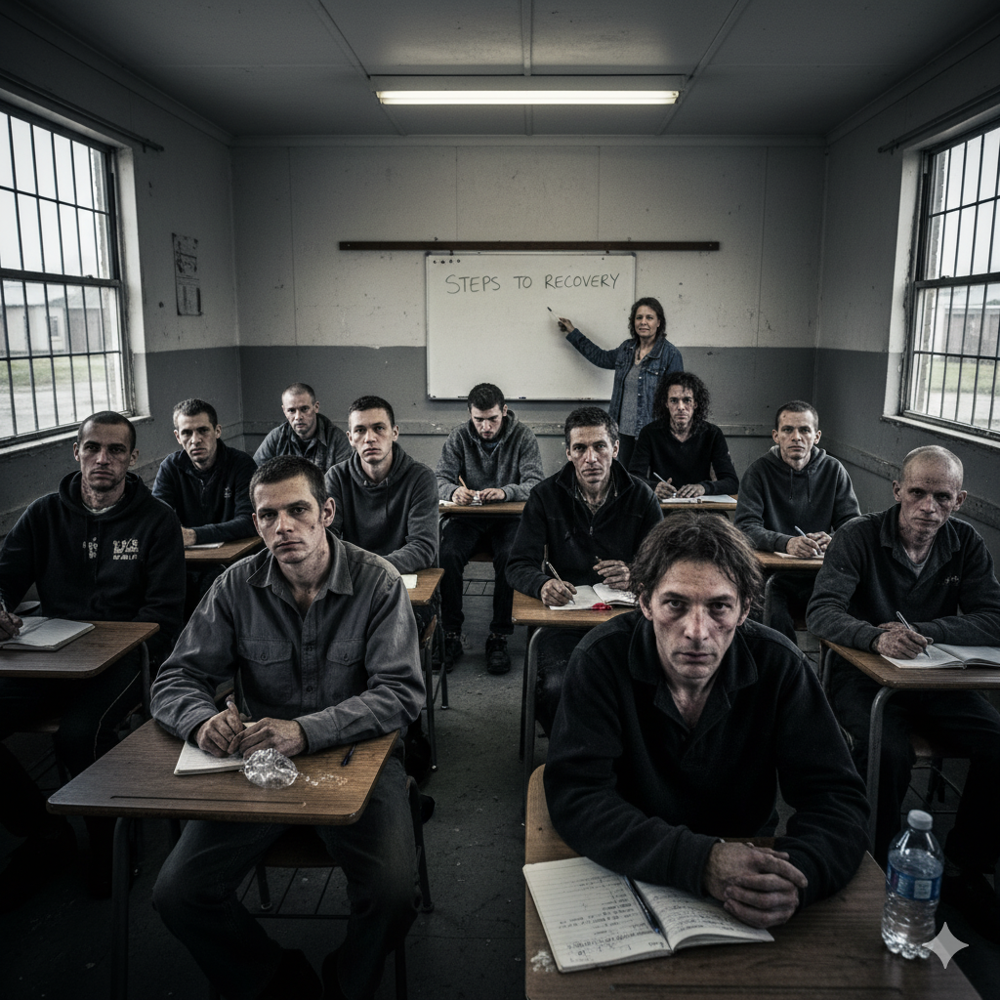
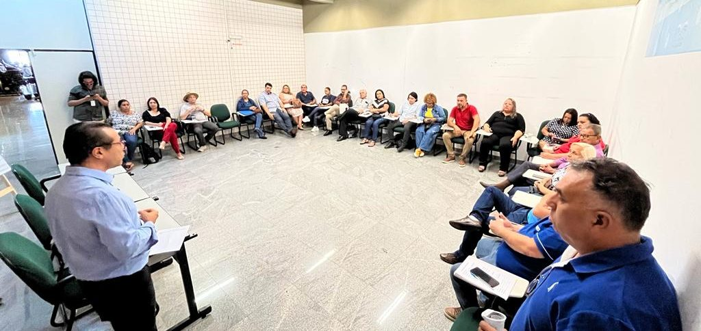
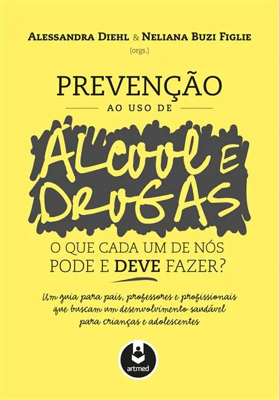
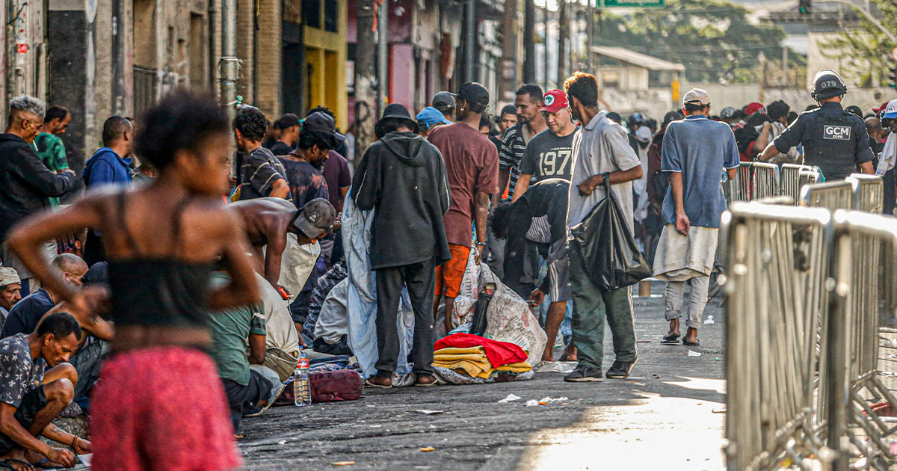

Projetos sociais
Conheça os projetos em que atuamos e como você pode ajudar — seja como voluntário ou doador.
Educação para Todos
Projeto focado em aulas de reforço escolar e alfabetização.

Indicadores: 200 alunos atendidos, 90% de aprovação.
Alimentando Vidas
Rede de distribuição de alimentos para famílias em vulnerabilidade.

Indicadores: 5.000 cestas distribuídas.
Voluntariado e Doações
Encontre oportunidades e saiba como doar em nossa página de cadastro.
Cadastre-se para participar como voluntário ou apoiador.
Galeria de Intervenções

Rodas de conversa com participantes do programa de reinserção.

Campanhas de prevenção às drogas e encaminhamento para tratamento.

Projetos de acolhimento e recuperação para pessoas em situação de rua.